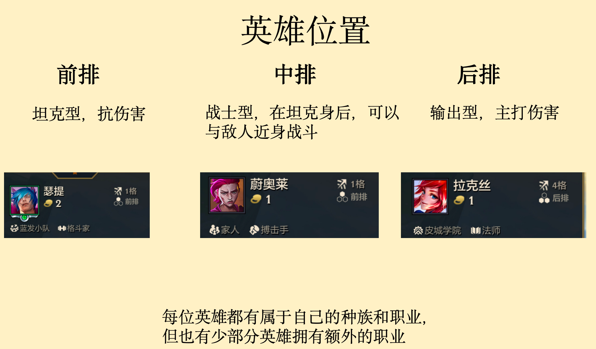
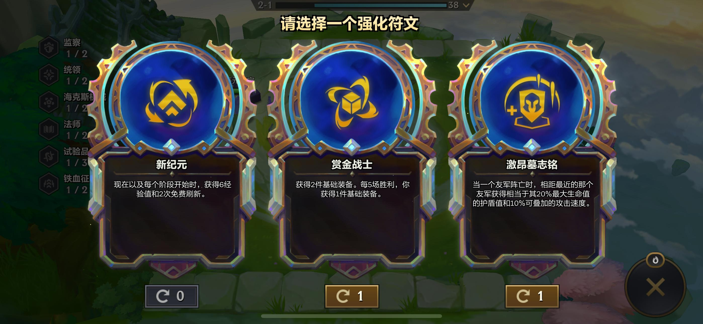
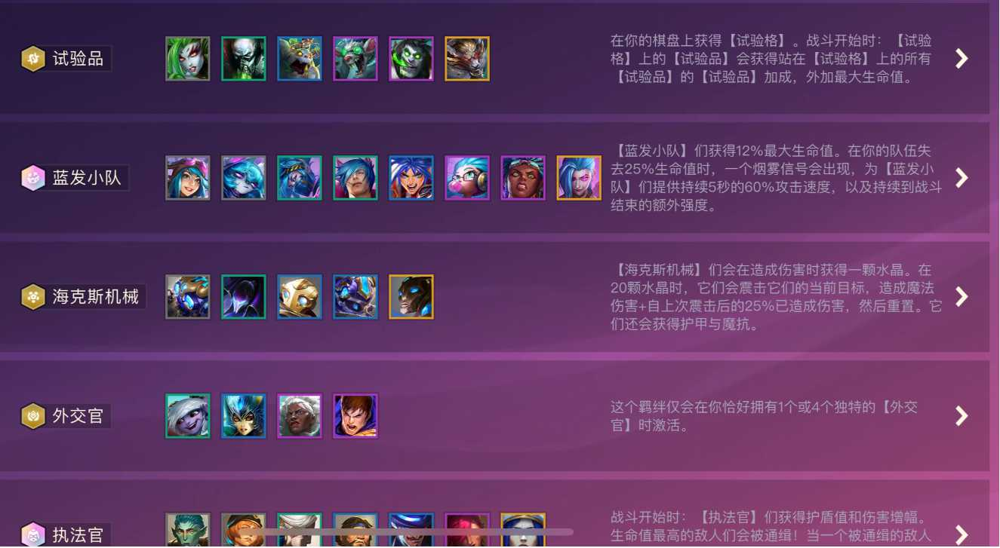
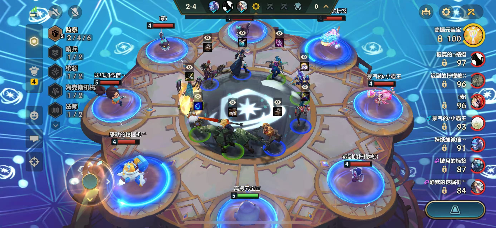
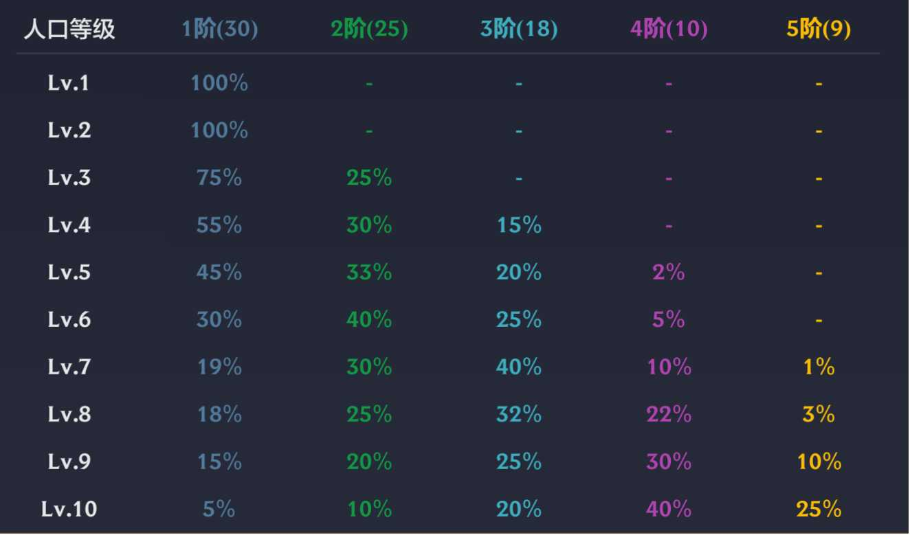
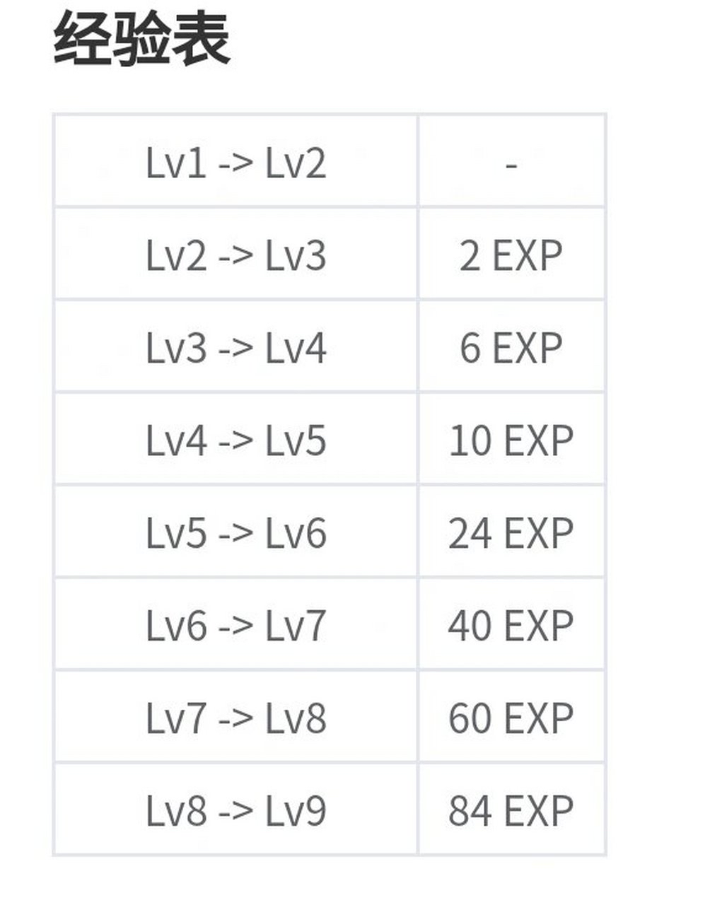

基础知识
三星：集齐9张相同卡牌
五费：需要5金币购买的卡
D牌：通过刷新来找到自己想要的牌
运营：指前期在合适时间点D牌，升级组成自己想要的阵容
拉人口：人口指的是当前的等级，拉人口即是升级
英雄
主要分为五个档次，一费卡灰色。二费卡绿色，三费卡蓝色，四费卡紫色，五费卡橙色，每张卡分三个星级（三个一星会自动合成二星兰个三星会自动合成三星）。
英雄位置

海克斯
1.可以强化阵容和羁绊，为特定的羁绊英雄提供额外的生命值和攻击力等。
2.为阵容提供各种强大的效果。
3.可以强化英雄，提供额外的增益和射程距离。

羁绊介绍
羁绊由3-8个英雄组成，每个羁绊有不同的优点，可以多个组合在一起。

机制介绍 - 选秀
在[抢装备回合]中按照游戏排名倒序两两抢夺装备先到先得，于是[血量]与[抢装备回合]的优先权，也是我们需要在游戏中决策思考的。

抢装备和棋子回合
等级
每升一级英雄刷新率会慢慢提升，到10级5费卡就会出现机率越高，每个等级的经验都不一样，人口越高经验越高,每拉升人口都会提高金币。


首页
历史
玩法介绍
评价
作者Jayden
2025.1.16
清仁SJNA